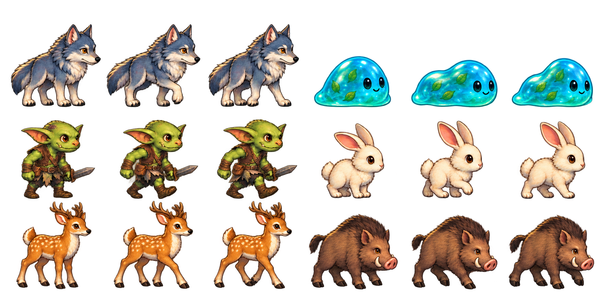

Referência e resultado dentro do jogo
Originais usados diretamente pelos atlas da v0.41 e capturas reais do Godot. Compare desenho, proporções, cores e detalhe; as galerias mostram os sprites reduzidos à escala de uso. Clique numa imagem com o botão direito para abrir o arquivo em seu tamanho original.
Herói e parte da decoração dos interiores ainda precisam acompanhar esta referência e continuam pendentes. A aprovação das imagens não foi registrada como aprovação visual do jogo inteiro.
Critérios de revisão · Comparação antes/depois da área piloto
Natureza
Referência original Render no Godot, na escala do jogo
Render no Godot, na escala do jogo
Moradores
Referência original Render no Godot, na escala do jogo
Render no Godot, na escala do jogo
Criaturas
Referência original
Render no Godot, na escala do jogo
Praça — cena real

Arredores — cena real

Criaturas nos campos — cena real